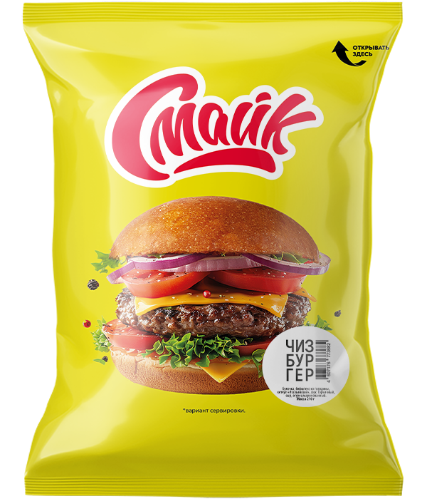

Чизбургер

Состав: булочка, бифштекс из говядины, кетчуп «Итальянский», соус «Горчичный», сыр, огурец маринованный, лук маринованный.
Масса: 210 г.
Пищевая и энергетическая ценность в 100 г продукта (средние значения):
Белки – 11 г.
Жиры – 16 г.
Углеводы – 29 г.
Калорийность – 300 ккал / 1260 кДж.